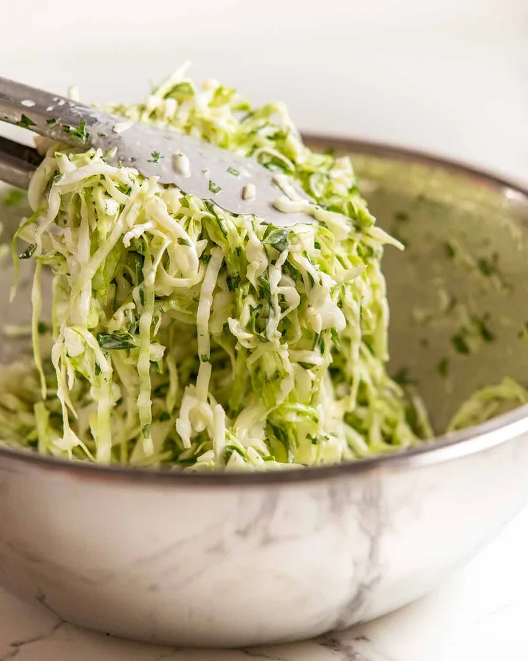

Lasagna recipe
Home

Description
Taco Slaw is a slaw designed for stuffing in tacos. With a limey sour
cream based dressing, it’s a personal favourite because it pairs so well
with Mexican flavours and does triple duty – good hit of vegetables
(cabbage wilts so much!), juicy enough to fill the role of a sauce/salsa
(ie less taco fixings to make), and makes a nice floppy bed for taco
fillings to nestle in.
Ingredients
- 6 tightly packed cups green cabbage
- 1 cup green onion
- 1/2 cup finely chopped coriander/cilantro leaves
Steps
Let's cook
- Mix the dressing ingredients in a large bowl.
-
Toss – Add the Slaw ingredients then toss well with hands or tongs.
-
Set aside for at least 1 hour until the cabbage becomes wilted and
floppy. Toss again then use in tacos!